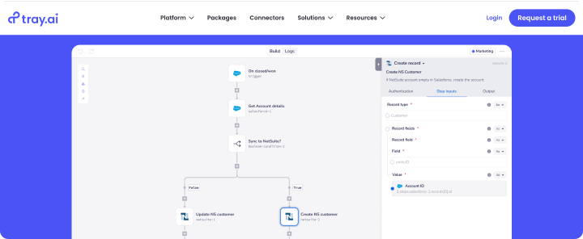
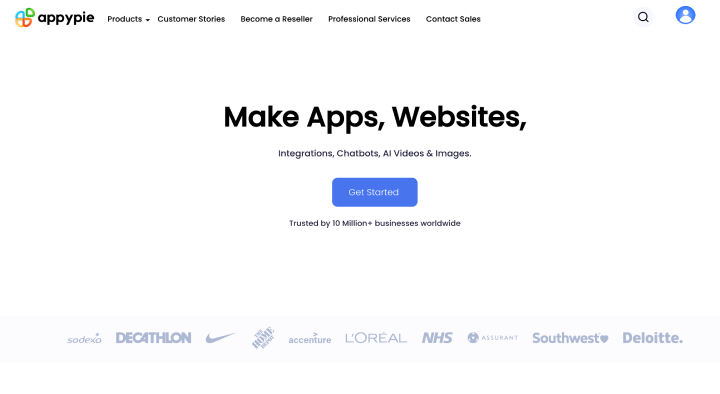

Top 5 Zapier Alternatives in 2025
Compare the best Zapier alternatives to find your ideal automation tool that offers more value, easier setup, and more powerful features.

You can be an absolute expert in your favourite field — whether it's marketing, building sales funnels, or project management — but you're not immune to the moment when routine tasks fill up your daily to-do list.
Working with spreadsheets that need regular updates, sending out similar emails, checking and synchronizing context with team — the list goes on. Luckily, there is a wide array of tools to better our work lives in 2025: advanced task trackers, intuitive chatbot builders, and powerful AI assistants.
In this article, we review no-code workflow automation platforms that serve as excellent alternatives to solutions like Zapier. These tools help automate workflows and synchronize data by connecting the applications we rely on.
What are no-code automation platforms
Today you can find solutions for almost any budget and need. Most no-code automation platforms are based on the same principle. There are trigger applications — these are the data source apps. And there are endpoint applications, where actions are performed after certain events and conditions. You connect your applications like Gmail, Notion, OpenAI, and Mailchimp and create a scenario where data from one application is used. This is achieved through the use of APIs, however, for users of these platforms, it's 'packaged' into a human-friendly diagram builder or visual process editor.
What data can be automized
By effortlessly moving blocks and diagrams representing events that trigger processes and the actions that should occur afterward, you can easily automate processes and synchronize data between applications:
- Posts. Automate posting to your company's Facebook account based on a Google Sheet.
- Marketing reports. Weekly update marketing reports in your Excel spreadsheet or database by pulling data from your advertising accounts.
- Invoices. Automatically create invoices when a deal moves to a new stage in your Notion or CRM.
- More complex scenarios. By integrating a chat for customer communication, we can send queries to an AI assistant, generate responses, and thus communicate with clients using AI platforms like OpenAI or Anthropic.
For data on website visitors, start with analytics. This data helps marketers and business owners create targeted strategies, optimise the user experience and increase conversions.
Zapier: Pros and cons

Among all the solutions on the market, Zapier remained the best platform for solving such tasks for many years. It surely has its strengths, but if you're reading this, you're likely on the hunt for a fresh alternative. Let's begin by exploring some reasons for seeking other options in workflow automation.
Pros
Functionality. Undoubtedly, Zapier has a massive library comprising over 5,000 applications — from popular ones like Microsoft and Google to less well-known apps. The platform also offers a large number of its own tools like spreadsheets, chatbots, and databases.
Cons
Pricing. The first and most noticeable drawback is pricing, which has changed significantly over the past few years. For many of us, the cost of the tool played a cruel joke, as a vast number of business-critical processes had already been set up in Zapier. However, at $299 per month, it can be quite expensive, especially for early-stage startups. The prices have become quite unacceptable, particularly for small and medium-sized businesses and startups.
Best Zapier alternatives in 2025
We choose the best alternatives that can compete with Zapier. Consider our list while keeping your team's needs in mind and choose carefully:
Make

A no-code platform for automating workflows and synchronizing data between applications, previously known as Integromat. If you're looking for flexibility and the ability to work with multi-threaded workflows and large amounts of data, Make is the best alternative. Let's delve into this.
Zapier vs. Make
Interface and Functionality. Unlike Zapier, Make is geared towards creating more complex workflows, though it handles simple tasks as well. In Make, after one trigger, you can send data to multiple 'branches' (different scenarios and endpoints) simultaneously, rather than sequentially as in Zapier. For example, when a 'new client' trigger in your CRM is activated, Make can instantly send a welcome email, create a new contact in Mailchimp, and assign a task to a sales manager — all within a single workflow. Its visual workflow editor, along with tools for iterations, loops, and data arrays, makes managing advanced integrations much easier compared to Zapier's block-based builder.
Support. Some users have noted in reviews that Make's support has become slower in responding to requests after rebranding, sometimes taking several days to get an answer. On the other hand, this may be offset for you by an extremely active user community that constantly helps each other and shares experiences.
Pricing. Beyond its functional advantages, Make is also more cost-effective. The tool offers a free plan with 1,000 operations and 100 modules. Its pro plan costs $34.12/month for 20,000 operations. But there are some nuances. Make counts all actions — data filtering, routing, and array processing — as operations, unlike Zapier, which only counts successful task completions. Frequent or high-volume operations, like daily updates to large reports, can quickly increase costs beyond initial expectations.
Make is undoubtedly the best alternative to Zapier for those who handle more complex scenarios and pricing. However, remember that you may not experience a significant difference in support quality or platform stability, and the learning curve can be steeper than with Zapier. Additionally, expenses can be less predictable and heavily depend on your workflow setup.
Zoho Flow

An ideal alternative if you're already using Zoho products like CRM or project management. While it may lack some of Zapier's advanced features, it covers all the essentials for basic automation needs. It's a great option for those who aren't fully using Zapier's functionality but still pay for it. So, what should you pay attention to when evaluating and choosing?
Zoho Flow vs. Zapier
Interface and Functionality. Zoho Flow is an intuitive, Zapier-like builder for automated workflows, featuring familiar tools such as 'decision' (similar to 'path' in Zapier), data processing tools, and error handlers. The visual editor resembles Tray.io, though it's not as visually appealing as Make. One key difference is that 'the decision' router supports only simple 'if/then' conditions, lacking the advanced capabilities of Zapier's path. Additionally, it uses its own deluge scripting language, which you'll need to learn.
Support. Zoho Flow cannot boast any special features in user support; it's mainly a standard scheme with an average response time to client queries within 48 hours. However, the support itself is quite friendly, and the answers can be considered detailed and effective. There is also documentation on how to use the platform, which can address most of your questions.
Pricing. The math for calculating your expenses and limits in Zoho Flow has recently aligned with Zapier, now using 'tasks' to count only successfully processed data. The standard plan costs $29 per month for 5,000 tasks, while the pro plan offers a 5-minute synchronization frequency and costs $49 per month for 10,000 tasks. Keep in mind that the standard plan has a 15-minute data retrieval frequency for API triggers and limitations on premium applications. Additionally, it only supports manual error resending, which may not be very convenient for users.
While Zoho Flow has its nuances and limitations compared to Zapier, it remains a strong alternative. It handles simple scenarios and is much more affordable, making it an excellent choice for 2025.
Albato
A platform for building integrations and automating processes without code. Albato is the best Zapier alternative as it comes with similar functionality at a more affordable price. It will suit any small or medium-sized businesses, especially for customer support, marketing, and sales teams, due to its highly responsive live chat support, which is particularly valuable for this user segment.
Albato vs. Zapier
Interface and Functionality. Albato's automation builder interface is straightforward and not cluttered with excessive buttons, labels, sidebars, and more. Automation creation is similar to Zapier's approach: you select a trigger event and an application, then choose the actions you want to perform. Albato strives to match its competitor's capabilities and offers a robust set of tools for creating integrations. You can set conditions for branching workflows, format data using processing tools, or write custom API requests as actions if you have the skills. The platform supports over 800 applications. While this number may seem small compared to Zapier, Albato focuses on quickly adding popular apps. You'll find major suites like Microsoft and Google, as well as regionally popular apps like RD Station in Brazil and Duda. In early 2024, the app list was much smaller, but it has grown significantly, reflecting the fast pace of new additions.
Support. Albato's developers focus not only on enhancing platform functionality but also believe that fast, high-quality support is essential, particularly for marketing and sales teams — a need often unmet in the market. Unlike Zapier, Albato offers free consultations and help in creating automation through live chat, regardless of your plan. The average response time is about 3 minutes. Many Albato users say that customer support has made the product better than any others.
Pricing. Albato's plans start at $19 per month, offering 1,000 'tasks' (or 'transactions' in Albato) compared to Zapier's 750. Higher limits are available on other plans. Albato complies with security standards like GDPR and SOC 2, and from 2024, it actively offers a plan for larger organizations with enhanced support and a dedicated project manager.
Switching from Zapier to Albato can save you both budget and time on integrations.
Tray.ai

Tray.ai is another process automation and data synchronization platform that stands out as a top alternative to Zapier. It offers advanced data synchronization capabilities and deep application integration, making it ideal for those seeking to build a comprehensive infrastructure for complex business processes.
Tray.ai vs. Zapier
Interface and Functionality. Like many platforms oriented towards deep integrations, Tray.ai has a visual editor interface, as an alternative to the block builder in Zapier. The main feature that makes Tray.ai the best alternative to Zapier is its capabilities that are close to full-fledged system integration. You'll find well-thought-out features such as data synchronization with a CSV file located on your FTP server, or advanced API management capabilities with convenient dashboards for tracking load, errors, and response times of your APIs. The level and depth of routing integration scenarios are not inferior to Make and surpass Zapier.
Support. Tray.ai's customer service is top-notch, though it's hardly surprising given that the product is geared towards large enterprises. The only thing to note is that despite comprehensive documentation and content, Tray.ai has a more complex learning curve than Zapier.
Pricing. It's hard to speak about exact prices since they are only available upon request to the sales department. However, based on user feedback, such powerful functionality and high-level support will cost you approximately $1,000 per month for an enterprise-level plan.
Tray.ai suits organizations requiring deep system integration and extensive process automation. While it comes at a higher cost, it offers significantly more functionality, along with dedicated technical support and customer service.
Appy Pie

Yet another Zapier alternative, Appy Pie is distinguished by its affordable pricing and all-in-one platform that includes app creation, website building, and workflow automation within a cohesive ecosystem. All products integrate seamlessly, and the platform supports 450 applications for integration.
Appy Pie vs. Zapier
Interface and Functionality. Appy Pie Automate allows you to automate workflows using an intuitive integration builder. The interface is simple, making it hard to make mistakes. However, it is more suited for simple integrations, and scenario routing here is as limited as in Zapier. There are tools to set more complex integration conditions like 'if/then' statements, filters, and other features similar to Zapier. You also have scheduled scenario launches and the ability to create scenarios based on webhooks. Approximately 450 applications are available for integration, some of which are marked as 'premium'.
Support. The subscription terms do not specifically mention customer service. However, according to reviews, Appy Pie's support is generally well-received. Support is available 24/7 via chat and email. There's also a large library of tutorials and training materials to help you understand how to use this tool.
Pricing. Limits in Appy Pie are based on tasks, similar to Zapier. However, a completed task is any executed action. On the recommended plan, you get unlimited premium applications and 50,000 tasks for $30 per month. The starter plan offers 15,000 tasks but only 5 premium applications. The offer is quite advantageous compared to Zapier, but payment is required upfront for the whole year, and to use the 7-day trial version, you need to provide your credit card information.
Appy Pie is the ideal alternative to Zapier for companies that don't need deep system integration and prefer using multiple products within one ecosystem for basic tasks. However, the limited number of integrations, available triggers and actions, and the requirement for annual payments warrant careful consideration and planning before purchasing.
We approached this article without much scepticism — after all, the no-code automation market is already quite saturated. However, it’s encouraging to see a trend toward democratizing technology, making automation tools accessible to both large corporations and small startups.
When selecting the best Zapier alternative in 2025, start with an honest audit of your processes. List the integrations and features you use, and consider your growth plans for the year ahead, teams included. Make your decision based on your actual needs rather than marketing claims:
- Consider Make if you're looking for a balance between powerful functionality and an easy learning curve. Their approach to multi-threaded workflows is precisely what's been missing in Zapier's single-dimensional approach. Although Make requires a deeper understanding of process logic, it's a worthwhile trade-off for nearly limitless automation possibilities.
- Try Zoho Flow if your company actively uses Zoho's suite of applications, as it's more affordable and well-integrated within the ecosystem.
- Switch to Albato if you want to save on your budget and have a smooth transition from Zapier, thanks to their similar functionality. Albato exemplifies the idea that 'sometimes less is more'. Although a relative newcomer, their commitment to customer support is refreshing.
- Tray.io is the best Zapier alternative if you're willing to invest in more advanced features, including API monitoring.
The choice is yours — select from the best options available.